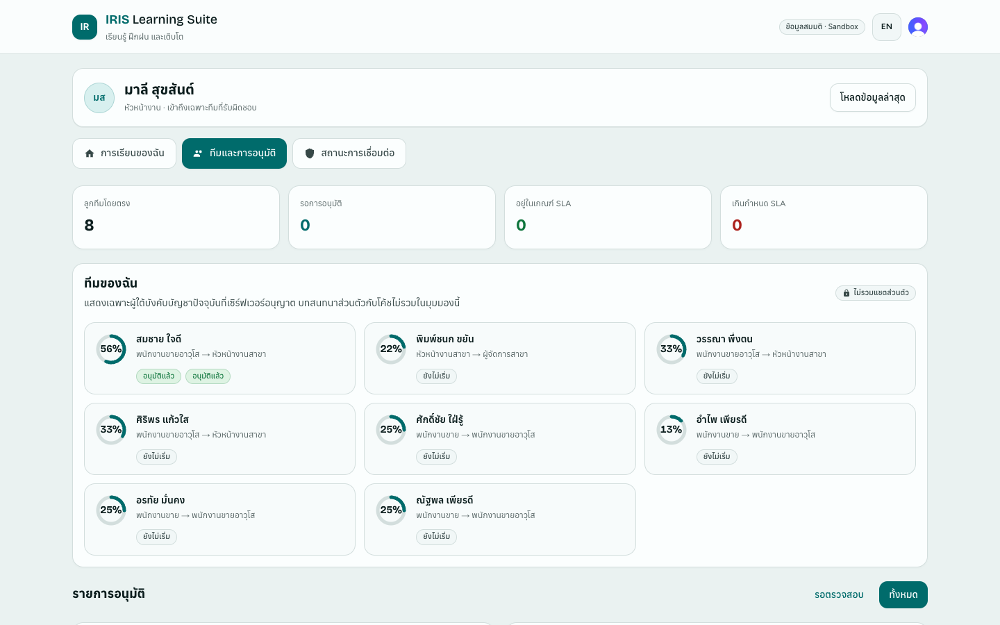
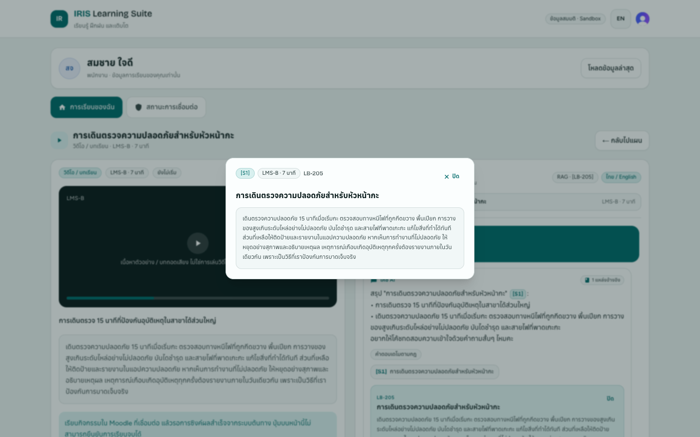

Next steps
1
Confirm wave 1 (Retail & Distribution and Packaging, Thailand) and the week-12 success criteria.
2
Name the client team: HR product owner, 2 SMEs per business unit, weekly IT security and DPO time.
3
Start the security pack and DPIA so they land in weeks 2 and 3.
4
Agree the commercial model in principle: fixed build fee plus per-employee subscription.
W1 mobilise and check assumptions · W2 security pack · W3 DPIA · W6 frameworks and demo · W9 AI gate · W10 go/no-go


So what
Approving these four decisions this week starts week 1 on time; everything else in the plan follows from them.
Mock data only: fictional company, people and courses · prototype screens from the hosted sandbox
12